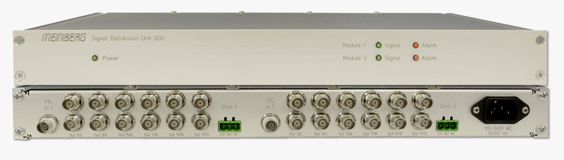
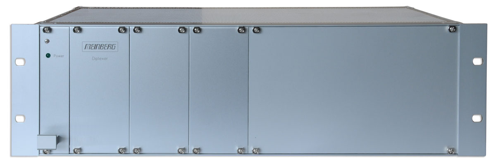
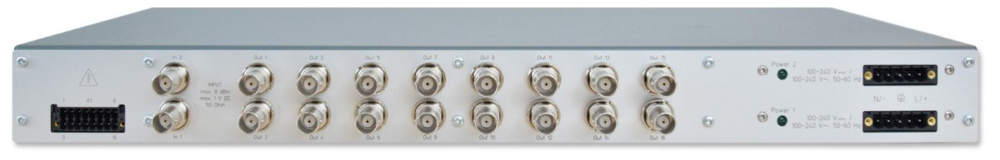
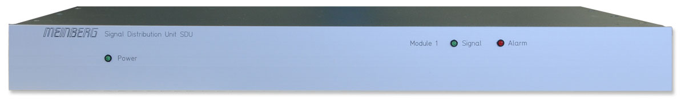
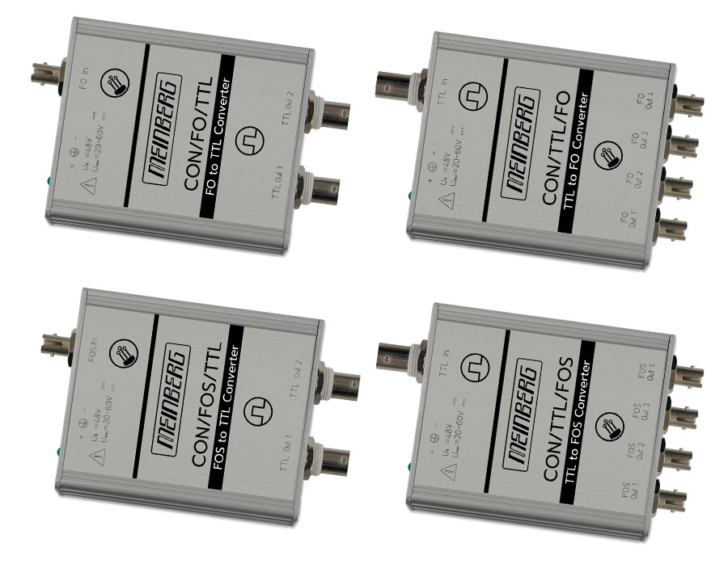
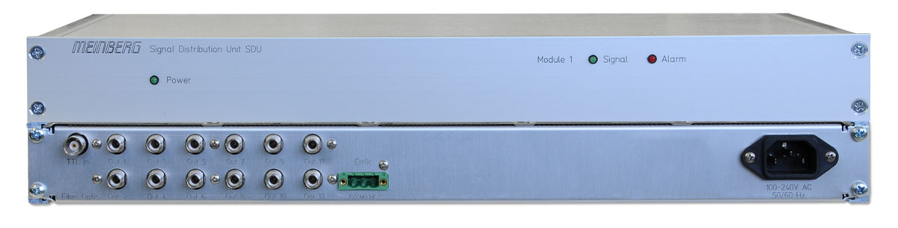

Editregion
Устройства SDU-это самый простой и удобный способ увелисчть количество сигналов синхронизации в вашей системе. Базовое шасси SDU может быть заказано с одним или двумя распределительными модулями, каждый из которых обеспечивает двенадцать дополнительных сигналов синхронизации. Подробнее...


Распределительное устройство для ввода и вывода TTL импульсов и частот в модульном корпусе:
DI/BGT имеет 19-дюймовое модульное шасси с включенным блоком питания. Устройство оснащено разъемами BNC как для входа, так и для выхода. Подробнее...
SDU-R/SIN/NET/RPS-это устройство распределения синусоидальных сигналов, имеет 16 буферизованных выходов(BNC) частотой 1-25 МГц с низким уровнем фазовых шумов. Подробнее...


Устройство SDU/EFB представляет собой распределитель сигналов, который позволяет подключать до 24 устройств к одному выходу синхронизации потока E1. Это очень компактный и экономичный способ увеличить количество портов E1, доступных для синхронизации коммутаторов и мультиплексоров телекоммуникационных сетей, а также других устройств, требующих синхронизации по потоку E1.Подробнее...
Волоконно-оптические модули преобразуют электрический входной сигнал (TTL или RS-422) в один или несколько выходных оптических сигналов или входной оптический сигнал в один или несколько электрических выходных сигналов. Модули подходят для преобразования сигналов типа IRIG (AM / DCLS), PPS или RS232 на большие расстояния. Подробнее...


Устройства SDU/FO-это простой и удобный способ добавить больше выходов сигналов синхронизации в распределительную стойку. Базовое шасси SDU/FO может быть поставлено с одним или двумя входными модулями, каждый из которых обеспечивает до двенадцати дополнительных волоконно-оптических выходных сигналов. Подробнее...

ООО "Прайм Тайм"
127322, Москва, ул. Яблочкова д.21, корп. 3, 3 этаж
Телефон/Факс: +7(495) 616-10-00
127322, Москва, ул. Яблочкова д.21, корп. 3, 3 этаж
Телефон/Факс: +7(495) 616-10-00